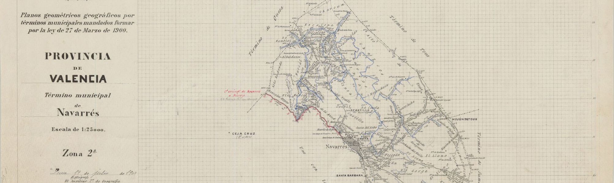
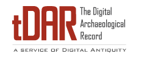

The Digital Archaeological Record (tDAR)
As is often the case with many archaeological collections, pro-actively curating reports, analyses, or other information about a collection is not always seen as a priority. Through five years experience as a digital curator at ASU’s the Digital Archaeological Record (tDAR), I recognize the importance of metadata. Now more than ever, it is important to digitize metadata and curate them in digital formats suitable for archiving and long-term preservation (such as PDF/A, Tiff, or Quicktime formats). Digital formats by their nature are easy to upload, disseminate, and manage, making them essential for researchers who would like to utilize collections in their projects. The following tDAR collections include collaborations with private, state, and federal cultural resource managers from around the country.
Associated Products
tDAR Collections
- The Archaeology of Vermont: https://core.tdar.org/collection/22102.
- Society for American Archaeology Archives of Archaeology: https://core.tdar.org/collection/13648.
- River Basin Surveys Papers, 1 – 39: https://core.tdar.org/collection/15527.
- US Air Force Archaeology and Cultural Resources Archive: https://core.tdar.org/collection/16304.
Reports
- Rivers-Cofield, Sara, Jodi Reeves Flores, Francis P. McManamon, Adam Brin, Grant Snitker, Chelsea Walter, Michael A. Smolek, and Amanda Vtipil
2014 - Evaluating a Cooperative Approach to the Management of Digital Archaeological Records. Submitted to Department of Defense Legacy Resource Management Program, Proj. 13-711.